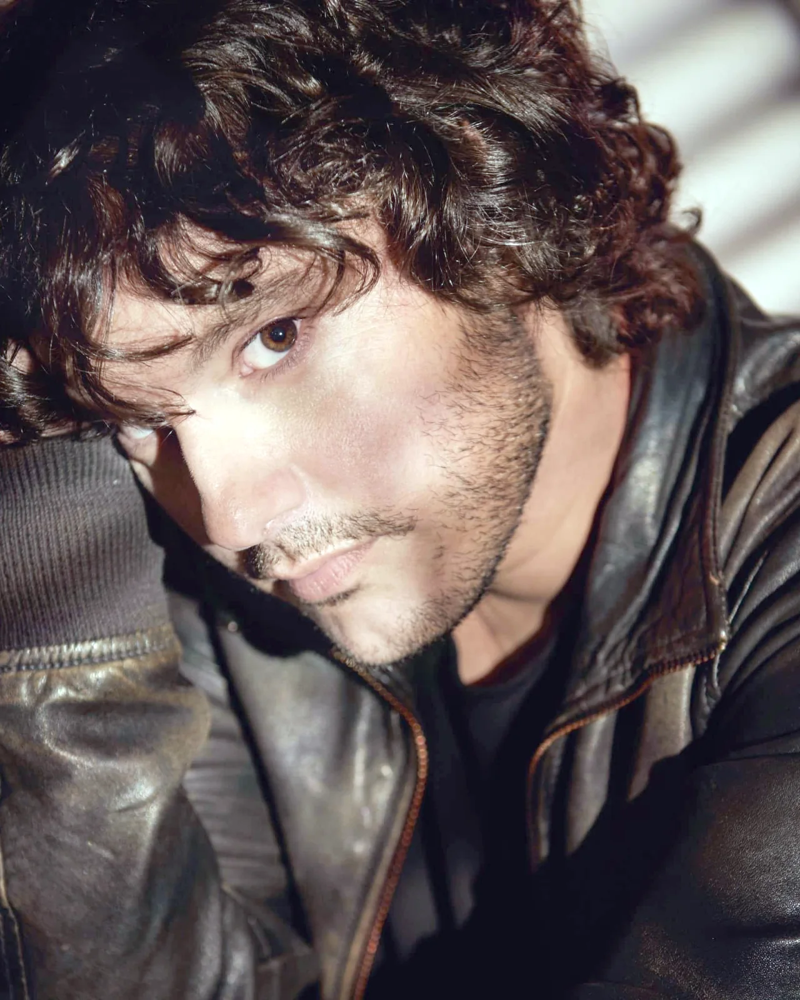
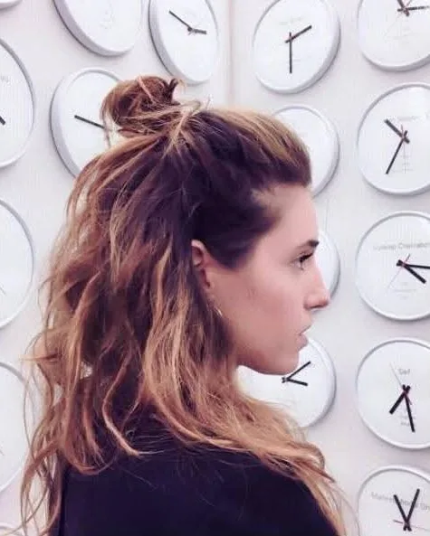
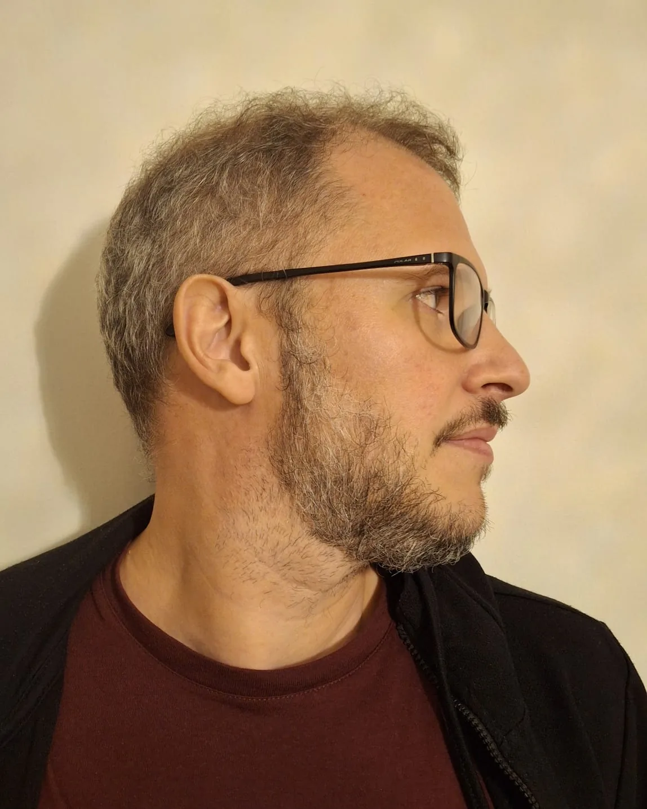
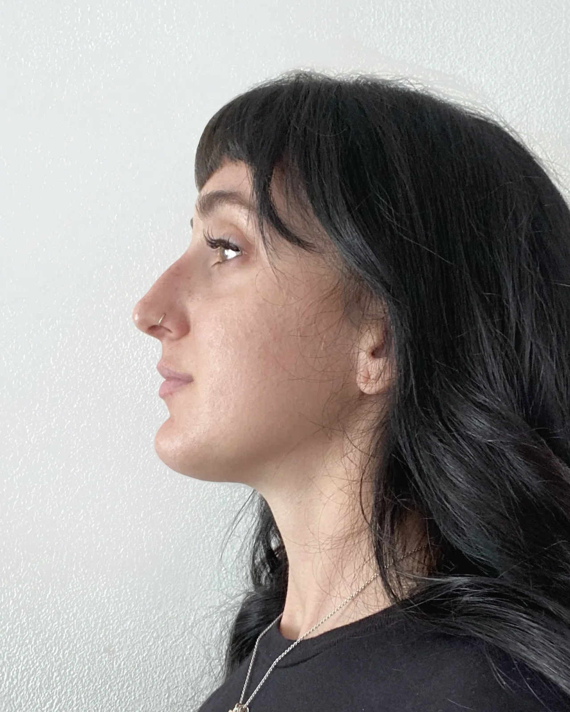
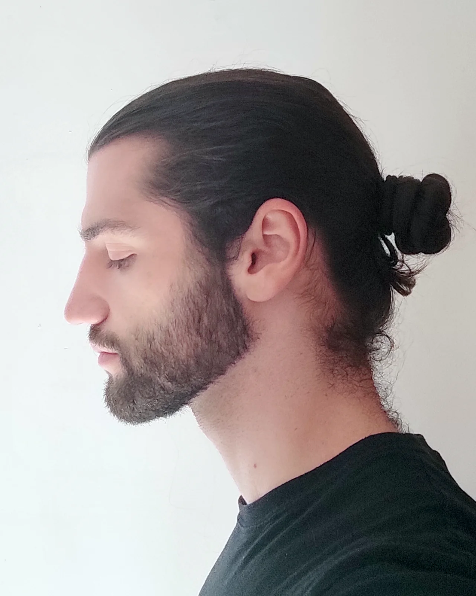
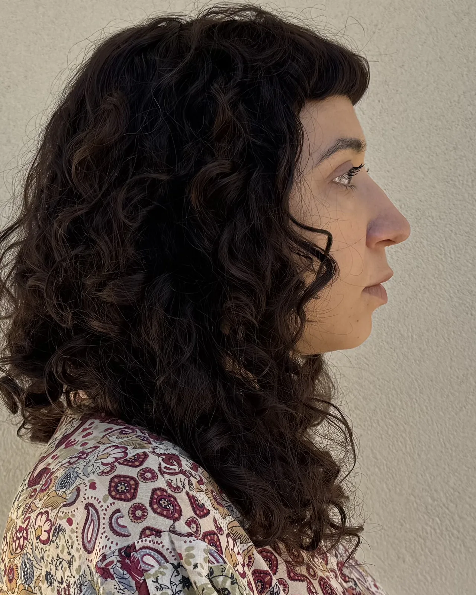
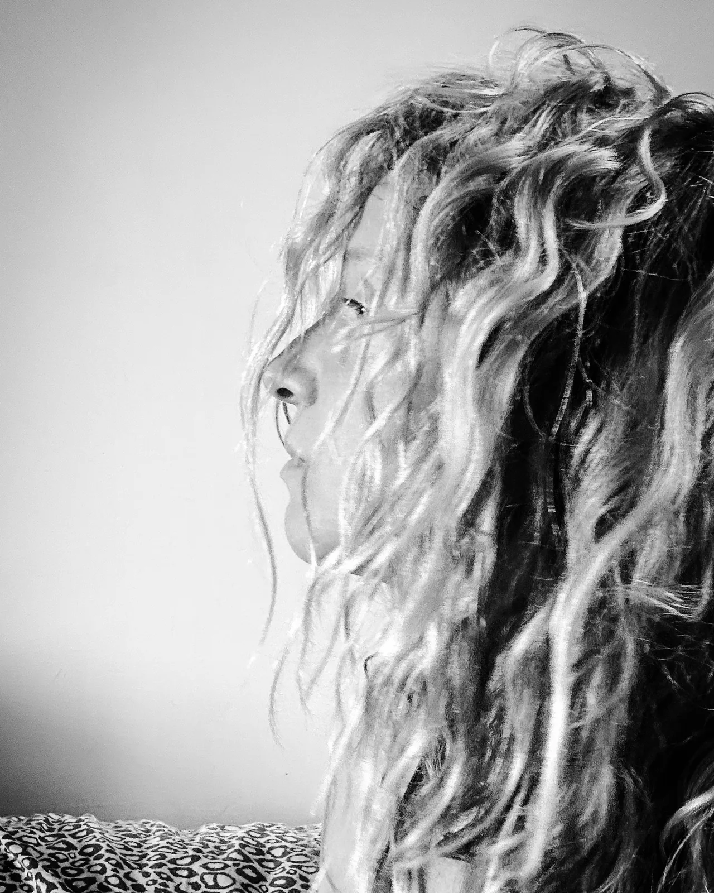
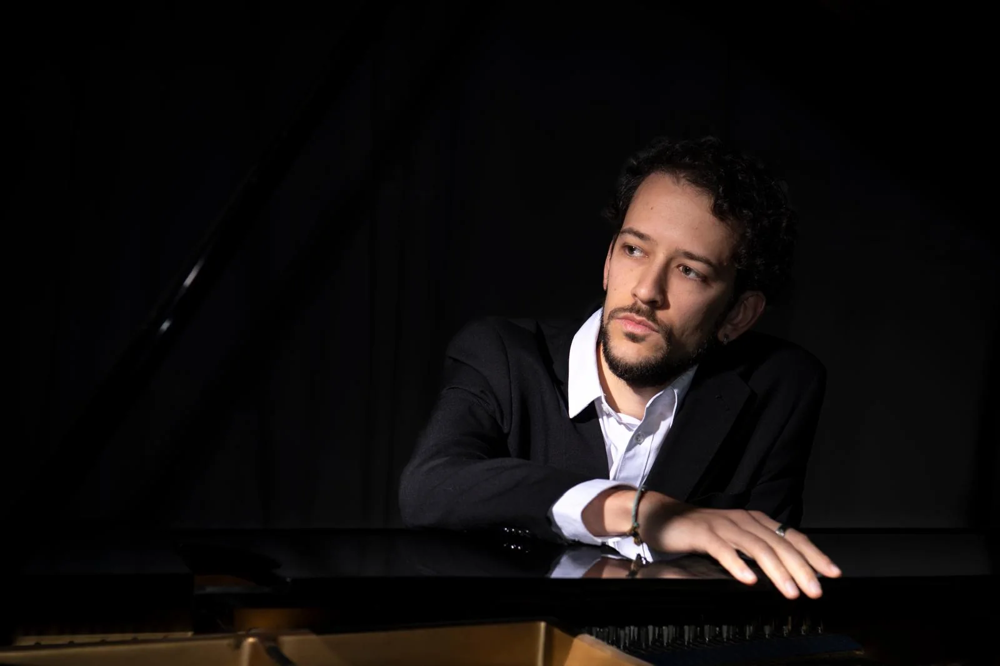
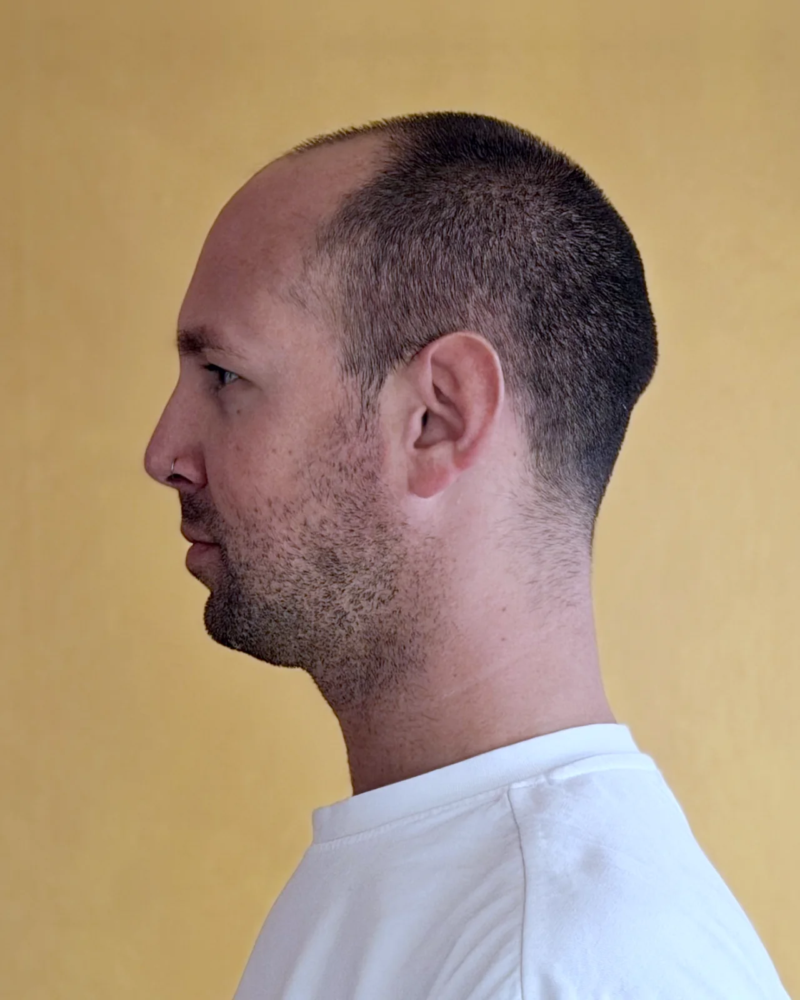

Chi c'è
Gli artisti
Segui il filo, scopri ogni artista entrando nella sua scheda.

Mattia Signorini
Scrittura
Romanziere, tradotto in mezzo mondo.

Giorgia Roversi
Pittura
Pittura dell'anatomia invisibile delle emozioni.

Zentequerente
Arti visive
Disegno e segni raccolti: l'invisibile dentro il visibile.

Marcello Ubertone
Cantautorato
Canzoni che raccontano storie, tra immaginazione e vita vera.

Anna Spazio Marangon
Arti visive · installazione
Installazioni di fili e nodi, tra spazio e materia.

Enrico Buoso
Musica e composizione
Intrecci di note e reti di persone.

Martino Prendini
Arti visive
Esplora con i sensi quello che non si scopre in altro modo.

Daniele Corrain
Pittura e illustrazione
Dipinge quello che gli passa per la testa, sporcandosi le mani.

Giulia Dal Prà
Collage
Ritaglia, accosta e ricompone quello che gli altri hanno smesso di guardare.

Anna Randolo
Illustrazione · Unnyverso
Dà colore e voce alle storie, soprattutto per i bambini.

Salvatore Passalacqua
Musica e arti visive · ETHA
Strumenti acustici ed elettronica, tra il reale e il surreale.

salsa_wasabbee
Fumetto e illustrazione
Tavole in bianco e nero: sperimenta, si spaventa, si addormenta.

Francesca De Simone
Poesia
Fissa in pochi versi un sentire sconosciuto.

Elia Pellegrini
Arti visive e 3D
Luce, architettura e tempo, tra i rosoni gotici e il mondo onirico.
Chi arriva
Gli ospiti
Tre presenze invitate accanto agli artisti del territorio.

CAINO
Fotografia
Fotografie che strappano e ricompongono le icone della pittura.

FILO
Cantautorato
Cantautore, autore del disco «In cerca di un filo».

Massimo Marchioro
Pittura
Cerca nelle stanze più profonde, e le scale che portano in alto.
Chi lo organizza
Gli organizzatori
Il festival è ideato e curato dal collettivo IANUA.

Nicola Elias Rigato
Pianoforte, composizione, scrittura, ricerca
Pianista e compositore, con una ricerca che non si ferma al palco.

Chiara Tosti
Danza
Il corpo come racconto, tra tecnica e improvvisazione.

Greta Rigato
Arti visive e installazione
Crea connessioni tra linguaggi e persone. In IANUA cura la comunicazione.

Marco Franceschetti
Fotografia e cantautorato
Colora schemi complessi, li sorvola con la musica, ne esce con la fotografia. In IANUA cura la direzione operativa.